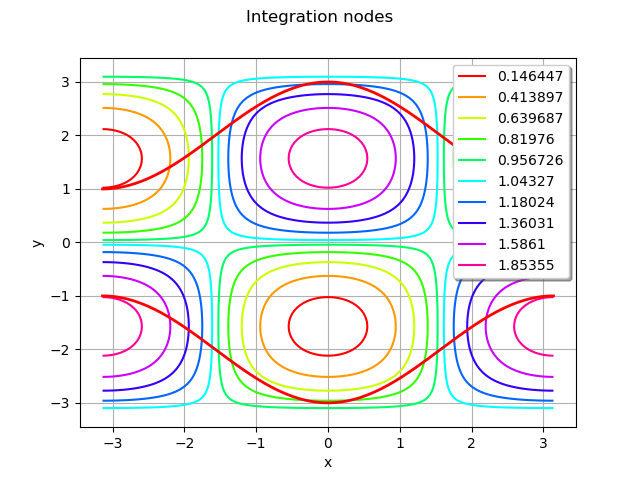

Note
Go to the end to download the full example code
Estimate an integral¶
In this example we are going to evaluate an integral of the form.
![I_f = \int_{a}^{b}\, \int_{l_1(x_0)}^{u_1(x_0)}\, \int_{l_2(x_0, x_1)}^{u_2(x_0,x_1)}\, \int_{l_{n-1}(x_0, \dots, x_{n-2})}^{u_{n-1}(x_0, \dots, x_{n-2})}
\, f(x_0, \dots, x_{n-1})\mathrm{d}{x_{n-1}}\dots\mathrm{d}{x_0}]()
with the iterated quadrature algorithm.
import openturns as ot
import openturns.viewer as viewer
from matplotlib import pylab as plt
import math as m
ot.Log.Show(ot.Log.NONE)
define the integrand and the bounds
a = -m.pi
b = m.pi
f = ot.SymbolicFunction(["x", "y"], ["1+cos(x)*sin(y)"])
ll = [ot.SymbolicFunction(["x"], [" 2+cos(x)"])]
u = [ot.SymbolicFunction(["x"], ["-2-cos(x)"])]
Draw the graph of the integrand and the bounds
g = ot.Graph("Integration nodes", "x", "y", True, "topright")
g.add(f.draw([a, a], [b, b]))
curve = ll[0].draw(a, b).getDrawable(0)
curve.setLineWidth(2)
curve.setColor("red")
g.add(curve)
curve = u[0].draw(a, b).getDrawable(0)
curve.setLineWidth(2)
curve.setColor("red")
g.add(curve)
view = viewer.View(g)

compute the integral value
I2 = ot.IteratedQuadrature().integrate(f, a, b, ll, u)
print(I2)
plt.show()
[-25.1327]